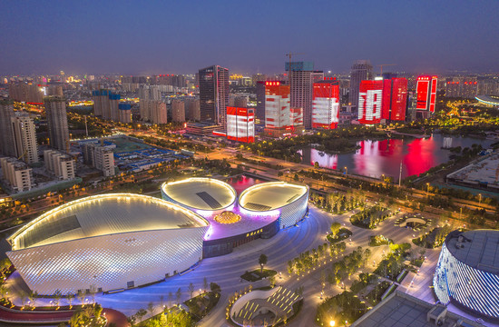
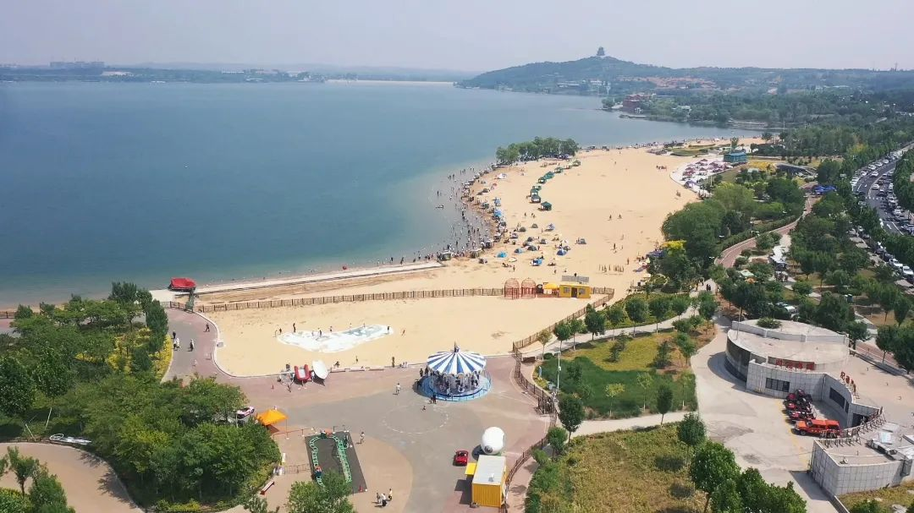
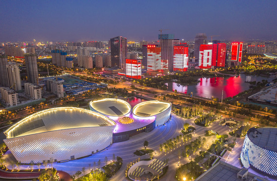
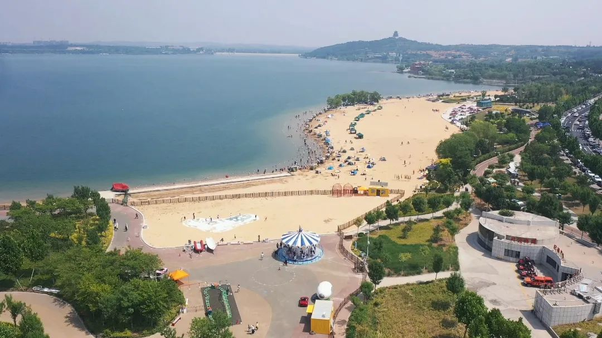

家乡介绍
气候综述：
淄博市四季分明，春季温暖、夏季炎热、秋季凉爽、冬季寒冷；淄博市是一个相对干燥的城市，降水多集中在夏季。
注意事项概述：
淄博是山东省内陆城市，早晚温差较大，游客要注意随时更换衣物。 淄博美食中有特色山珍菜肴，游客在就餐时要注意，防止食物中毒或者过敏等。
季节特色：
每年4、5月份举办国际聊斋文化旅游节，9月份举办齐文化旅游节，在这两个时间段去淄博旅游，不但可以欣赏淄博的优美自然风光，还可以感受一下聊斋故里的乡风民俗，深入了解齐国故都的灿烂文化。
特色信息：
1、淄博沂源县是“牛郎织女传说”之乡，是国内唯一一处传说与实地实景相对应并存有古建筑遗址的珍稀景观——建于唐代的织女洞和牛郎庙，是很多情侣定情的首选之地。
2、淄博是世界足球的起源地，早在2300多年前的齐国，就出现“其民无不踏鞠者”，是世界上最早的足球运动。
3、淄博是齐文化的发祥地，孕育了众多的历史名人。
4、淄博是清朝小说家蒲松龄的故乡。
5、周村古商城以古代商埠为基础发展成为了现在的旅游区。
地理位置
淄博地处鲁中，南依沂蒙山区，北临华北平原， 东接潍坊，西与省会济南接壤。市域形态南北狭长，南北最大纵距151公里，东西最大横距87公里。地理适中，交通发达，是沟通中原地区和山东半岛的咽喉要 道，是山东省重要的交通枢纽城市。淄博地势南高北低，南部及东西两翼山峦迭宕，中部低陷向北倾伏，南北落差千余米。以胶济铁路为界，以南大部分为山区、丘 陵，岩溶地貌发达；以北大部分为山前冲积平原和黄泛平原，土地平坦肥沃。北部有黄河、小清河流经，发源于淄博的河流有沂河、淄河、孝妇河等。全市山区、丘 陵、平原面积分别占全市总面积的42％、29.9％和28.1％。淄博地处暖温带，年平均降水量为640.5毫米，属半湿润半干旱的大陆性气候。全市年平 均气温12.3℃-13.1℃，年平均日照时数为2542.6-2832.6小时，年平均无霜期180-220天。全市总面积5938平方公里，占山东省 总面积的3.79%。其中市区面积2961平方公里。其四季特征分明, 春季风大干旱,夏季湿热多雨,秋季晴朗多旱,冬季干冷少雪。最热月份为七月，最冷月份为一月。
名人事迹
1、姜子牙（约前1156年—约前1017年），中国著名历史人物，商朝末年人。姜姓，吕氏，名尚，一名望，字子牙，或单呼牙，也称吕尚，别号飞熊。 2、孙膑（生卒年不详），其本名孙伯灵（山东孙氏族谱可查），是中国战国时期军事家，汉族，山东鄄城人。出生于阿、鄄之间（今山东省菏泽市鄄城县北），是孙武的后代。 3、扁鹊（公元前407—前310年）姬姓，秦氏，名缓，字越人，又号卢医，春秋战国时期名医。春秋战国时期渤海郡郑（今河北沧州市任丘市）人。开启了中医学的先河。相传有名的中医典籍《难经》为扁鹊所著。 4、管仲（约公元前723年—公元前645年），姬姓，管氏，名夷吾，字仲，谥敬，春秋时期法家代表人物 ，颍上人（今安徽颍上、或郑州登封颍河上游），周穆王的后代。被誉为“法家先驱”、“圣人之师”、“华夏文明的保护者”、“华夏第一相”。 5、贾思勰，约在永熙二年至武定二年间（533～544），北魏农学家贾思勰著成综合性农书《齐民要术》。贾思勰是寿光人，生平不详，曾任高阳太守。
淄博文化
淄博历史悠久，文化灿烂。临淄作为春秋战国时期“春秋五霸之首，战国七雄之冠”的齐国都城长达800年之久。在此期间，风云变幻，波澜壮阔，姜太公、齐桓公、齐威王、管仲、孙武、晏婴、田单、司马穰苴等名君贤相、英帅良将，不仅创建了“临淄之中七万户，临淄之途，车毂击、人肩摩，连衽成帷，举袂成幕，挥汗如雨，家敦而富，志高而扬”的这个海内外闻名的东方名都，也创建了一部雄壮曲折的齐国史。在先秦的历史舞台上具有举足轻重的地位。悠久的历史，为淄博遗留了大量的文物古迹，临淄故城及其周围地带文物古迹浩繁，被誉为“地下博物馆”。临淄的后李文化在我国北方属首次发现，大汶口文化、龙山文化、岳石文化、殷商文化在淄博皆有迹可寻。清代文坛大家蒲松龄和他的巨著《聊斋志异》以其博大精深的文化内涵越来越受到国内外的关注，淄川区蒲家庄，也成为一个风光优美、宛若仙居的聊斋文化旅游区。清代文坛领袖王渔洋、赵执信和蒲松龄被后人并称为孝妇河畔三名人，蕴藏深厚的齐文化，使淄博成为一个名副其实的积淀深厚的文化旅游之都。
旅 游 攻 略
旅游景点
1、淄博聊斋城。2、淄博市国井酒文化生态博览园。3、淄博原山森林公园。4、淄博市中国陶瓷馆。 5、淄博福王红木博物馆。6、淄博周村古商城。7、淄博鲁山森林公园。8、淄博市王渔洋故里景区。 9、临淄中国古车博物馆。10、淄博沂源鲁山溶洞群风景区。11、淄博潭溪山旅游区。12、淄博市源泉开源溶洞旅游区。
特色美食
1、博山焦庄烧饼。2、博山豆腐箱。3、博山炸肉。4、博山炸春卷。5、博山砸鱼汤。 6、博山石蛤蟆水饺。7、博山酥锅。8、博山糗糕。9、博山软烧豆腐。10、博山油粉。11、博山酱汁鸭方。 12、淄川肉烧饼。13、淄川菜煎饼。 14、周村烧饼。15、桓台欢喜团子。16、高青黄河鲤鱼。17、沂源大锅全羊。
淄博特产
1、周村烧饼（以小麦粉、白砂糖、芝麻为原料，以传统工艺制作而成。薄如秋叶，形似满月；落地珠散玉碎，入口回味无穷。） 2、淄博陶瓷（淄博陶瓷是古老的汉族制瓷技艺。淄博是位于鲁中部的新兴工业城市,淄博是古齐国的都城，是驰名世界的瓷都之一。） 3、扳倒井酒 4、淄砚 5、蒲公酒 6、软烧豆腐 7、沂源全蝎 8、淄博池梨。